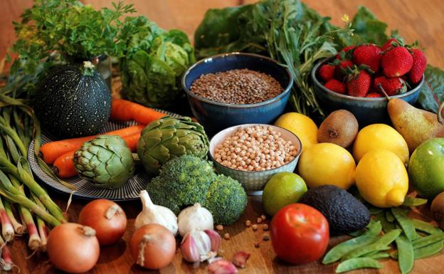

Las dietas por alimentación son patrones alimentarios específicos que se basan en la exclusión o inclusión de ciertos grupos de alimentos. Las dietas por alimentación pueden tener distintos objetivos, como mejorar la salud, reducir el impacto ambiental, o cumplir con requisitos éticos o religiosos.
Dietas Vegetarianas
Dieta lacto-ovo-vegetariana: esta es una de las dietas vegetarianas más comunes. Excluye la carne, el pescado y los mariscos, pero permite el consumo de huevos y productos lácteos.
Dieta vegana: esta dieta excluye todos los productos de origen animal, incluyendo la carne, el pescado, los lácteos, los huevos y la miel. Se basa en frutas, verduras, legumbres, granos integrales, nueces y semillas.
Dieta crudivegana: esta dieta vegana se enfoca en alimentos crudos y sin procesar, como frutas, verduras, frutos secos y semillas. Se cree que esta dieta ofrece beneficios para la salud debido a su alta concentración de nutrientes.
Dietas Veganas
Dieta vegana equilibrada: esta es una dieta vegana convencional que se enfoca en una amplia variedad de alimentos nutritivos y equilibrados, incluyendo frutas, verduras, granos enteros, legumbres, nueces y semillas. Es importante asegurarse de obtener suficientes proteínas, hierro, calcio y vitaminas B12 y D.
Dieta vegana alta en proteínas: esta dieta se enfoca en alimentos veganos ricos en proteínas como tofu, tempeh, seitan, legumbres, nueces y semillas. Es importante asegurarse de obtener suficientes proteínas para el crecimiento y mantenimiento muscular.
Dieta vegana baja en grasas: esta dieta se enfoca en alimentos bajos en grasas, como frutas, verduras, granos enteros, legumbres y algunos productos veganos procesados bajos en grasas. Esta dieta puede ser útil para bajar de peso y mejorar la salud del corazón.
Dietas Mediterraneas
Dieta mediterránea clásica: esta dieta se enfoca en alimentos frescos, enteros y de origen vegetal, como frutas, verduras, granos enteros, legumbres, frutos secos y semillas. También se incluyen pescado, huevos, productos lácteos bajos en grasas y aceite de oliva como principales fuentes de proteína y grasas saludables. Se recomienda limitar el consumo de carnes rojas, alimentos procesados y dulces.

Dieta mediterránea de Creta: esta dieta se basa en la tradicional alimentación de la isla de Creta, donde se consumen principalmente alimentos de origen vegetal, como frutas, verduras, legumbres, granos enteros y hierbas aromáticas. También se incluyen pescados, quesos, huevos y aceite de oliva como fuentes de proteína y grasas saludables. Se recomienda limitar el consumo de carnes rojas y productos procesados.
Dieta mediterránea moderna: esta dieta se adapta a los patrones alimentarios actuales, pero mantiene los principios fundamentales de la dieta mediterránea clásica, enfocándose en alimentos frescos, enteros y de origen vegetal, como frutas, verduras, granos enteros, legumbres, frutos secos y semillas. También se incluyen pescado, huevos, productos lácteos bajos en grasas y aceite de oliva como principales fuentes de proteína y grasas saludables. Se recomienda limitar el consumo de carnes rojas, alimentos procesados y dulces. Además, se incluyen alimentos como el aguacate, la quinoa y el tofu, que no son tradicionales en la dieta mediterránea clásica, pero que se han incorporado a esta versión moderna.